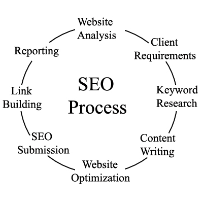

SEO stands for Search Engine Optimization. It is a process designed to optimize a website for search engines. It helps websites achieve a higher ranking in search engine results when people search for keywords related to their products and services. So, it is a practice of increasing the quantity and quality of traffic to a website through organic search engine results. See the following image to understand the basic activities involved in the SEO.
Search results are presented in the form of an ordered list, and the sites which are higher on the list tend to receive more traffic. For example, for a search query, the result which is at number one will receive 40 to 60% of the total traffic generated for that query. Only 2 to 3% visitors go beyond the first page of search results.
Search Engines such as Google have their own algorithm or rules to decide the order of pages to show for a search query. These algorithms determine the rankings of the SERPs based on various ranking factors. However, it gives more emphasis on certain metrics to evaluate the quality of a page and accordingly to decide its ranking.
Links: The links from other sites are called backlinks. These links help in determining the ranking of a site in SERPs. A link is considered as a vote of quality from other websites, as a website owner would not link to a site that is of poor quality.
Content: The quality of content is also a vital parameter in determining the ranking of a site. The content should be unique, relevant for the given search query.
Page Structure: The web pages are written in HTML; the html coding of a page is also used by search engines to evaluate a page. So include important keywords in the title, URL, and other meta tags and also make sure the site is crawlable.